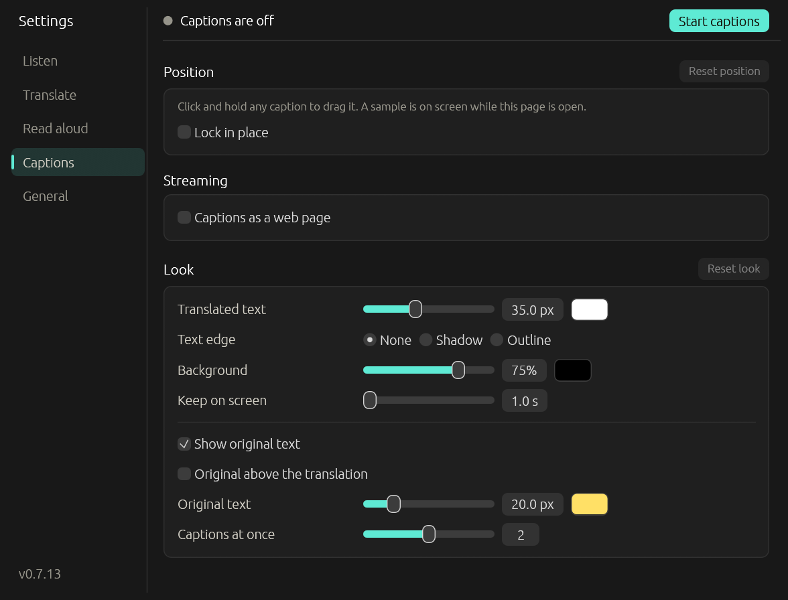

वर्ज़न 0.7.11 आ गया है
आपके कंप्यूटर पर चलने वाली हर चीज़ के लिए लाइव कैप्शन
Hammurabi सिस्टम ऑडियो और आपके माइक्रोफ़ोन को स्क्रीन पर कैप्शन में बदलता है, और चाहें तो उनका अनुवाद भी करता है। यह Windows, macOS और Linux पर चलता है, पूरी तरह आपके अपने कंप्यूटर पर।
WindowsWindows, NVIDIA RTX 50 सीरीज़Windows, कोई भी GPU, वक्ता की आवाज़ के साथmacOS (Apple silicon)Linux (x64)
मुफ़्त और ओपन सोर्स। न अकाउंट, न API की। ऑडियो कभी आपके कंप्यूटर से बाहर नहीं जाता।

डाउनलोड
अपना सिस्टम चुनें, इंस्टॉल करें, चलाएँ
Windows 10 और 11
hammurabi-windows-x64-setup.exe
किसी भी 64-बिट PC पर चलता है। इंस्टॉलर इसे सिर्फ़ आपके यूज़र के लिए इंस्टॉल करता है, एडमिनिस्ट्रेटर अधिकारों की ज़रूरत नहीं, और उसके बाद Hammurabi ख़ुद को अपडेट करता रहता है। SmartScreen कह सकता है कि ऐप पहचाना नहीं गया: More info पर, फिर Run anyway पर क्लिक करें।
CUDA वाला Windows
hammurabi-windows-cuda-setup.exe
Whisper और अनुवाद को RTX 50 सीरीज़ के कार्ड पर चलाता है: शब्द बोले जाने के आधे सेकंड से थोड़ा ज़्यादा बाद अनूदित कैप्शन आ जाता है। हाल का NVIDIA ड्राइवर चाहिए। पुराने कार्ड सामान्य Windows बिल्ड इस्तेमाल करें।
किसी भी GPU वाला Windows
hammurabi-windows-gpu-setup.exe
इसमें वक्ता की आवाज़ (Speaker's voice) जुड़ जाती है, जो हर कैप्शन को बोलने वाले व्यक्ति की ही आवाज़ में पढ़ती है। Vulkan वाला GPU और लगभग 1 से 2.5 GB ख़ाली VRAM चाहिए। इसका वॉइस मॉडल सिर्फ़ निजी, गैर-व्यावसायिक इस्तेमाल के लिए है।
Apple silicon पर macOS
Metal के ज़रिए GPU इस्तेमाल करता है। ऐप को Applications फ़ोल्डर में ले जाएँ। यह notarized नहीं है, इसलिए macOS पहली बार खुलने से रोकता है: xattr -dr com.apple.quarantine /Applications/Hammurabi.app चलाएँ, या इसे एक बार खोलें, Done पर क्लिक करें, फिर System Settings > Privacy & Security में Open Anyway पर क्लिक करें। कैप्शन शुरू करते समय System Audio Recording की अनुमति दें।
Linux x64
इसे एक्सट्रैक्ट करें और ./hammurabi चलाएँ। सिस्टम ऑडियो के लिए PulseAudio, या pipewire-pulse के साथ PipeWire चाहिए। X11 सेशन इस्तेमाल करें: Wayland हमेशा ऊपर रहने वाली विंडो और ग्लोबल हॉटकी को रोक देता है।
यह क्या करता है
उन आवाज़ों के लिए कैप्शन जिनके कैप्शन नहीं होते
सिस्टम ऑडियो
फ़िल्में, स्ट्रीम, लेक्चर और कॉल। आपके कंप्यूटर पर जो भी बजे, Hammurabi उसका कैप्शन बना देता है।
माइक्रोफ़ोन
किसी से आमने-सामने बात कर रहे हैं? वे बोलते जाते हैं और कैप्शन आते जाते हैं, भाषा अलग हो तब भी। या दोनों के कैप्शन एक साथ दिखाएँ।
ज़रूरत हो तो अनुवाद
बिल्ट-इन MADLAD-400 मॉडल से 26 भाषाओं में, या Ollama या LM Studio के ज़रिए आपके अपने लोकल LLM से।
हमेशा ऊपर रहने वाला ओवरले
कैप्शन आपकी सभी विंडो के ऊपर तैरते हैं, बॉर्डरलेस फ़ुलस्क्रीन में भी। उन्हें कहीं भी खींचकर रखें और टेक्स्ट का स्टाइल अपने हिसाब से बदलें।
ट्रे और हॉटकी
यह ट्रे में रहता है और बीच में नहीं आता। Alt+Shift+T कैप्शन चालू या बंद करता है, Alt+Shift+M उन्हें खिसकाता है।
GPU पर तेज़, CPU पर भी ठीक
Whisper किसी भी CPU पर, Metal के ज़रिए Apple GPU पर, और CUDA बिल्ड के साथ RTX 50 सीरीज़ के कार्ड पर चलता है। Windows 11 पर यह इंजन के रूप में Windows लाइव कैप्शन (Live Captions) भी इस्तेमाल कर सकता है।
Natural अनुवादक
गेम और फ़िल्मों के लिए: जहाँ तेज़ अनुवादक शब्द-दर-शब्द चलता है, वहाँ यह बोलचाल की भाषा और लहजा समझता है। Windows पर किसी भी ग्राफ़िक्स कार्ड के साथ चलता है।
स्क्रीन पर सबटाइटल
जो गेम अपने सबटाइटल ख़ुद दिखाता है, उसे सुनने की जगह पढ़ा जा सकता है। नाम और बोलचाल के शब्द वैसे ही आते हैं जैसे लिखे हैं, और अक्सर लाइन बोले जाने से पहले ही अनूदित हो जाती है। गेम के सबटाइटल ढकें (Cover the game's subtitles) चालू करने पर अनुवाद गेम के सबटाइटल के साथ चलता है, स्क्रीन पर भी और स्ट्रीम में भी: डिफ़ॉल्ट रूप से ठीक उसके नीचे रहता है, और बॉक्स को अपारदर्शी करके ऊपर खिसकाने पर ठीक उसके ऊपर बैठकर उसे छिपा देता है। सेटिंग्स > कैप्शन (Settings > Captions) में आप अनुवाद का आकार, रंग और किनारा, बॉक्स का रंग और अपारदर्शिता, उसकी जगह और उसकी अधिकतम चौड़ाई चुन सकते हैं। Windows।
स्ट्रीम पर कैप्शन
कैप्शन वेब पेज के रूप में (Captions as a web page) चालू करें और http://127.0.0.1:7460 को OBS में Browser source के रूप में जोड़ें। गेम को आधा सेकंड देर से दिखाएँ, तो दर्शक हर कैप्शन ठीक उसी समय देखेंगे जब लाइन बोली जाती है। Hammurabi अपडेट होने पर पेज अपने आप रीलोड हो जाता है, इसलिए स्ट्रीम को बिना हाथ से रिफ़्रेश किए नया वर्ज़न मिल जाता है।
पढ़कर सुनाना
पढ़ने के बजाय सुनना पसंद है? Hammurabi हर पूरा हुआ कैप्शन बोलकर सुना सकता है, और अगर आप अनुवाद इस्तेमाल करते हैं तो उसका अनुवाद, आपके कंप्यूटर में पहले से मौजूद आवाज़ों में। बोलते समय यह सुनना बंद कर देता है, ताकि इसकी अपनी आवाज़ कभी कैप्शन में न आए। जब लाइनें इसके बोलने से तेज़ आती हैं, तो यह तेज़ पढ़ता है और दस सेकंड से पुरानी लाइनें छोड़ देता है, ताकि तस्वीर के साथ बना रहे। मूड के हिसाब से एक वॉइस पर्सोना चुनें: Iris, Ruby, Owen, Miles, Grace या Skye, शांत और धीमी से लेकर तेज़ और चहकती तक। पहले किसी का भी सैंपल प्ले करके सुन लें। सब कुछ आपके कंप्यूटर पर ही रहता है।
आवाज़ आपकी भाषा पर आकर नहीं रुकनी चाहिए। Hammurabi आपके कंप्यूटर की हर आवाज़ को ऐसे टेक्स्ट में बदलता है जिसे आप पढ़ सकें, और उसका एक सेकंड भी कहीं नहीं भेजता।
कैसे काम करता है
एक बार सेट करें, फिर यह नज़रों से दूर रहता है
- सोर्स चुनेंट्रे मेन्यू से सिस्टम ऑडियो, अपना माइक्रोफ़ोन, या दोनों चुनें।
- भाषा चुनेंइसे ऑटोमैटिक पर छोड़ दें, या बेहतर सटीकता के लिए बोली जा रही भाषा बताएँ। अनुवाद चाहिए तो उसे चालू करें और लक्ष्य भाषा चुनें।
- हॉटकी दबाएँकैप्शन ओवरले में दिखने लगते हैं। उन्हें छिपाने के लिए Alt+Shift+T फिर से दबाएँ। ऐप ट्रे में चलता रहता है।
- सेटिंग्स में अपने हिसाब से बदलेंस्पीच मॉडल, अनुवाद इंजन, कैप्शन का आकार, रंग, बैकग्राउंड, लाइनों की संख्या और वे कितनी देर दिखें। Hammurabi लॉग इन करते ही अपने आप भी शुरू हो सकता है।

प्राइवेसी
आपका ऑडियो आपके कंप्यूटर पर ही रहता है
स्पीच रिकग्निशन और अनुवाद, दोनों लोकल चलते हैं, इसलिए आप जो सुनते या कहते हैं, वह प्रोसेसिंग के लिए कहीं अपलोड नहीं होता। न कोई अकाउंट बनाना है, न बीच में हमारा कोई सर्वर है। नेटवर्क पर सिर्फ़ दो चीज़ें जाती हैं: Hugging Face से मॉडल डाउनलोड, और GitHub पर नए वर्ज़न की जाँच, जो Windows पर नया इंस्टॉलर भी डाउनलोड करती है। अगर आप अनुवाद के लिए लोकल LLM चुनते हैं, तो कैप्शन आपके कंप्यूटर पर चल रहे उसी सर्वर पर जाते हैं। पढ़कर सुनाने के लिए आपके ऑपरेटिंग सिस्टम की ऑफ़लाइन आवाज़ें इस्तेमाल होती हैं। कोड GitHub पर सार्वजनिक है, आप ख़ुद जाँच सकते हैं। पूरी जानकारी प्राइवेसी पॉलिसी में है।
सवाल-जवाब
लोग अक्सर पूछते हैं
क्या यह मुफ़्त है?
हाँ। Hammurabi MIT लाइसेंस के तहत ओपन सोर्स है। कोई पेड प्लान नहीं, कोई ट्रायल नहीं, और कोई API की ख़रीदनी नहीं पड़ती।
Windows कहता है कि MSVCP140.dll नहीं मिला
0.7.6 से पहले के वर्ज़न को Visual C++ Redistributable चाहिए था, जो कुछ PC में नहीं होता। इंस्टॉलर दोबारा डाउनलोड करके चलाएँ: यह पुराने के ऊपर इंस्टॉल हो जाता है और वह फ़ाइल भी साथ ले आता है।
क्या ऐप हिन्दी में है?
अभी नहीं। Hammurabi का इंटरफ़ेस अंग्रेज़ी, तुर्की, स्पेनिश, पुर्तगाली और चीनी में है; अगर आपके सिस्टम की भाषा इनमें से कोई है तो ऐप उसी में खुलता है, वरना अंग्रेज़ी में। भाषा सेटिंग्स > सामान्य (Settings > General) में बदली जा सकती है। कैप्शन और अनुवाद हिन्दी समेत इससे कहीं ज़्यादा भाषाओं में काम करते हैं।
मुझे कौन-सा डाउनलोड चाहिए?
Windows पर CUDA बिल्ड तभी लें जब आपके पास NVIDIA RTX 50 सीरीज़ का कार्ड हो; बाकी सब सामान्य Windows बिल्ड लें। वक्ता की आवाज़ चाहिए तो GPU बिल्ड लें। Mac वाले macOS बिल्ड लें (सिर्फ़ Apple silicon), और Linux वाले tar.gz।
Windows या macOS इस ऐप के बारे में चेतावनी क्यों देता है?
बिल्ड अभी किसी पेड सर्टिफ़िकेट से कोड-साइन नहीं हैं। Windows पर More info, फिर Run anyway पर क्लिक करें। macOS पर System Settings > Privacy & Security में Open Anyway इस्तेमाल करें, या xattr -dr com.apple.quarantine /Applications/Hammurabi.app से quarantine फ़्लैग हटा दें।
क्या यह मेरा ऑडियो कहीं भेजता है?
नहीं। Whisper आपके कंप्यूटर पर चलता है, और अनुवाद भी। कुछ भी अपलोड नहीं होता।
यह कितना तेज़ है?
आधुनिक CPU पर डिफ़ॉल्ट मॉडल सामान्य बातचीत के साथ चल लेता है। RTX 50 सीरीज़ के कार्ड पर CUDA बिल्ड के साथ, शब्द बोले जाने के आधे सेकंड से थोड़ा ज़्यादा बाद अनूदित कैप्शन दिख जाता है। धीमे कंप्यूटर पर सेटिंग्स में tiny या base मॉडल चुनें।
क्या यह गेम के कैप्शन बना सकता है?
बॉर्डरलेस और विंडो मोड वाले गेम के, हाँ। Windows पर एक्सक्लूसिव फ़ुलस्क्रीन वाले गेम हर दूसरी विंडो के ऊपर बनते हैं, इसलिए ओवरले उनके ऊपर नहीं दिख सकता।
हॉटकी काम नहीं कर रही। अब क्या करें?
Windows कीबोर्ड लेआउट बदलने के लिए Alt+Shift इस्तेमाल करता है, जो शॉर्टकट को निगल सकता है। इसे सेटिंग्स > सामान्य में बदलें। Linux पर ग्लोबल हॉटकी के लिए X11 सेशन चाहिए।
Babil से यह कैसे अलग है?
Babil आपके ब्राउज़र के अंदर वीडियो के कैप्शन बनाता है। Hammurabi पूरे कंप्यूटर और आपके माइक्रोफ़ोन के कैप्शन बनाता है, इसलिए यह डेस्कटॉप ऐप, कॉल और आमने-सामने की बातचीत में भी काम करता है।
यह नाम क्यों?
हम्मुराबी (Hammurabi) बेबीलोन का राजा था, और Babil बेबीलोन का तुर्की नाम है। यह डेस्कटॉप ऐप उस ब्राउज़र एक्सटेंशन का भाई है।
स्क्रीन की हर आवाज़ पढ़ें
Windows, macOS और Linux के लिए मुफ़्त। डाउनलोड करें, सोर्स चुनें, हॉटकी दबाएँ।
menzo के और टूल